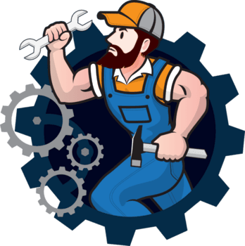

Repair The Gear is a smart roadside assistance platform designed to connect vehicle owners with nearby mechanics and towing services during emergencies.
Whether you're dealing with a flat tire, battery failure, engine trouble, or an unexpected breakdown, our app helps you quickly locate and contact verified mechanics in your area. Using real-time GPS technology, Repair The Gear matches users with the nearest available service providers, reducing wait times and getting drivers back on the road faster.
Our mission is to make roadside assistance simple, reliable, and accessible for everyone. By combining location-based services, instant request management, and a user-friendly interface, Repair The Gear provides a seamless experience for both vehicle owners and mechanics.
"Repair The Gear is built to ensure that help is always just a few taps away."